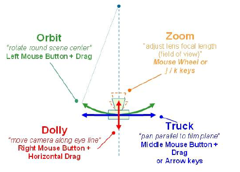

DIRECT SCENE INTERACTIONS
Viewer interactions with the camera are summarized below. In each case the interaction is listed, along with
description and user actions required to achieve it.

- Note for orthographic cameras:
There is no field of view of view/focal length dollying and zooming producing an identical scaling action.
There is a fixed eye direction so the Orbit` action is disabled.
- Note for perspective cameras:
Dollying (moving the camera backwards/forwards) and zooming are often confused, and may appear very similar.
When you dolly the camera the lens focal length does not change, hence the distortions associated with the projections are unaffected. However the movement can result in objects coming through the front` of the camera and disappearing.
When you zoom, the camera does not move hence clipping of near objects is unaffected. However with extremely small zooms (FOV large/focal length short) noticeable distortions, causing straight lines to become curved, can be seen with objects near the camera the fisheye` lens effect.
Generally dollying is more `natural`, but you may need to use both to achieve the desired perspective and eye position particularly when you are working inside or very close to 3D objects.
KEY ACTIONS
-
j --- zoom in
k --- zoom out
Arrow Keys --- pan (truck) across scene
Home* --- reset current camera
*Note: Home key does not exsists on Mac. The same action is created
with 'fn + LeftArrow' keys.
MUSE ACTIONS
You can rotate(orbit) the scene by holding the left mouse button and moving
the mouse (perspective camera, needs to be enabled for orthograpic camers).
By default, the scene will be rotated about its center. To select
arbitrary center selected "PickCameraCenter" in popup context menu.
You can pan (truck) the camera using the middle mouse button or arrow keys.
You can zoom the camera by dragging side to side holding the right
mouse button (in perspective mode the camera is translated along viewing axis).
MODIFIER KEYS FOR ROTATION, PANNING, AND ZOOMING:
Shift -- accelerate by factor 10
Ctrl -- decelerate by factor 10
Ctrl+Shift -- decelerate by factor 100